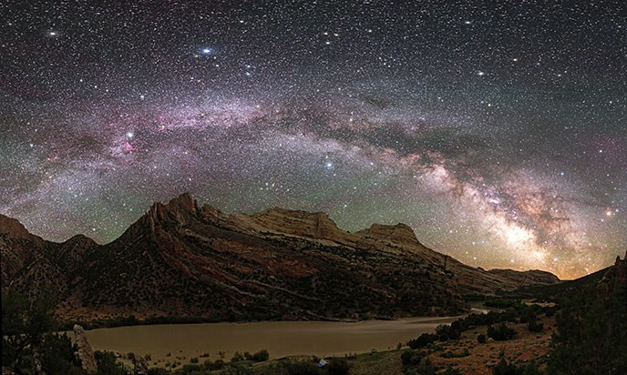

Vistazo al espacio...
¿Qué es el Big Bang?

El Big Bang es cómo los astrónomos explican la forma en que comenzó el universo. Es la idea de que el universo comenzó como un solo punto, luego se expandió y se estiró para crecer tanto como lo es ahora.
¿De qué se trata todo esto del Big Bang?
En el año 1927, un astrónomo llamado Georges Lemaître tuvo una gran idea. Dijo que hace muchísimos años, el universo comenzó como un simple punto. Dijo que el universo se había extendido y expandido hasta llegar a tener el tamaño actual, y que podría seguir expandiéndose.
Apenas dos años más después, un astrónomo llamado Edwin Hubble observó que había otras galaxias que se estaban alejando de nosotros. Y eso no es todo. Las galaxias lejanas se estaban moviendo más rápido que las que teníamos cerca. Esto quería decir que el universo aún se estaba expandiendo, tal como lo había anticipado Lemaître. Si las cosas se estaban separando, eso significaba que muchísimo tiempo atrás, esas cosas habían estado unidas ente sí.
En sus orígenes, el universo estaba formado por partículas diminutas y calientes, mezcladas con luz y energía. No se parecía en nada a lo que vemos ahora. A medida que todo eso se fue expandiendo y fue ocupando más espacio, el universo se empezó a enfriar.
Las pequeñas partículas se agruparon. Y formaron los átomos. Después esos átomos se agruparon. Luego de muchísimo tiempo, los átomos se juntaron para formar las estrellas y las galaxias.
Las primeras estrellas crearon átomos y grupos de átomos más grandes. De ahí nacieron más estrellas. Al mismo tiempo, las galaxias se chocaban y agrupaban unas con otras. A medida que nacían nuevas estrellas y morían otras, se formaban cosas como asteroides, cometas, planetas y agujeros negros.

¿Cuánto tiempo llevó todo esto? Bueno, ahora sabemos que el universo tiene 13,800,000,000 de años de edad, esto es 13.8 mil millones.
Así es más o menos cómo se originó el universo. Debido a que creció muchísimo y trajo grandes resultados, algunas personas lo llaman "Big Bang" (Gran Explosión). Pero tal vez, un mejor nombre sería "Expansión Total".
¿Qué es una galaxia?
Las galaxias son acumulaciones de gas, polvo y miles de millones de estrellas y sus sistemas solares, agrupadas gracias a la gravedad.
Una galaxia es un conjunto de gases, polvo y miles de millones de estrellas y sus sistemas solares. La galaxia se mantiene unida gracias a la fuerza de gravedad. Nuestra galaxia, la Vía Láctea, también tiene un agujero negro supermasivo en el medio.

Cuando de noche observamos las estrellas en el cielo, estamos viendo otras estrellas de la Vía Láctea. Si está muy oscuro y estamos lejos de las luces de la ciudad y de las casas, podemos incluso ver cómo las franjas de polvo de la Vía Láctea se expanden en el cielo.

Algunas galaxias tienen forma de espiral como la nuestra. Tienen brazos curvados que hacen que parezcan molinetes. Otras galaxias son lisas y tienen forma de óvalo. Se las denomina galaxias elípticas. También existen galaxias que no tienen forma ni de espiral ni de óvalo. Son de forma irregular y parecen manchas. La luz que nosotros vemos de cada una de estas galaxias proviene de las estrellas en su interior.

Tipos de galaxias
Galaxias en espiral parecen a gigantescas molinetes.
Los brazos del molinillo están compuestos de estrellas y un montón de gas y polvo. El gas y el polvo son algunos de los ingredientes principales necesarios para formar nuevas estrellas. Las estrellas jóvenes queman mucho más caliente que las estrellas más viejas, así que las galaxias espirales son a menudo algunas de las más brillantes en el universo. Alrededor del 60% de las galaxias cercanas son espirales. Nuestra galaxia, la Vía Láctea, es un muy buen ejemplo de una.

Galaxias elípticas tienen forma de círculos estirados o elipses.
Algunas galaxias elípticas están más estiradas que otras. Uno puede parecer casi perfectamente circular. Otro podría parecer largo y plano. Las galaxias elípticas contienen principalmente estrellas más viejas. Esto significa que a menudo no son tan brillantes como las galaxias espirales. También tienen muy poco polvo y gas. Las galaxias elípticas son las galaxias más grandes y más comunes observadas. Constituyen alrededor del 20% de todas las galaxias cercanas.
Galaxias irregulares son sólo eso: irregular.
No tienen ni una sola forma común. Las galaxias irregulares están entre las galaxias más pequeñas que los científicos han observado. Sin embargo, también pueden ser muy brillantes. Al igual que las galaxias espirales, las galaxias irregulares suelen estar llenas de gas, polvo y muchas estrellas jóvenes brillantes. Alrededor del 20% de las galaxias cercanas son galaxias irregulares.

Quáseres son áreas compactas en el centro de una galaxia.
Ellos emiten enormes cantidades de energía. Los quásares son en realidad algunos de los objetos más brillantes del universo. No hay cuásares cerca de nuestra Vía Láctea.

¿Qué es un planeta?
Los planetas de nuestro sistema solar no aparecieron de la nada. Tampoco lo hizo el Sol. Todos ellos eran parte de una enorme nube de gas y polvo. La gravedad reunió muchos materiales en el centro para crear el Sol. Los residuos giraron alrededor del Sol en formación, colisionaron entre sí y se acumularon. Algunos tuvieron suficiente gravedad para atraer incluso más gas y polvo, y eventualmente formaron planetas.
Los científicos pasaron mucho tiempo discutiendo sobre qué es en realidad un planeta. En 2006, acordaron una definición. Dijeron que un planeta debe hacer tres cosas: La primera podría parecer obvia; debe orbitar alrededor del Sol. En segundo lugar, debe ser suficientemente grande para tener la suficiente gravedad como para formar una forma esférica. Y en tercer lugar, debe ser suficientemente grande para que la gravedad despeje los objetos de similar tamaño cercanos a su órbita alrededor del Sol.

Esta definición se concentra en gran parte en nuestro propio sistema solar. Pero también hay planetas en otros sitios, además de nuestro sistema solar. Estos planetas se conocen como exoplanetas. Pueden encontrarse circulando alrededor de las estrellas, del mismo modo que los planetas de nuestro propio sistema solar.
¿Gran planeta o estrella diminuta?
Todo el tiempo, nubes de gas que no tienen suficiente material para formar una estrella se juntan para formar esferas. La mayor parte del tiempo, estas nubes forman un tipo de estrella conocida como enana marrón. Son bastante grandes en comparación con la mayoría de los planetas, pero no son lo suficientemente grandes para convertirse en el tipo de estrella que produce mucha energía y emite luz.
¿Qué es una nebulosa?
Una nebulosa es una nube gigante de polvo y gas en el espacio. Algunas nebulosas provienen del gas y el polvo expulsado por la explosión de una estrella moribunda, como una supernova. Otras nebulosas son regiones donde comienzan a formarse nuevas estrellas. Por esta razón, algunas nebulosas se llaman "viveros de estrellas".

¿Cómo se forman las estrellas en una nebulosa?
Las nebulosas están hechas de polvo y gases, principalmente hidrógeno y helio. El polvo y los gases en una nebulosa están muy dispersos, pero la gravedad puede comenzar a juntar grupos de polvo y gas. A medida que estos grupos se hacen más y más grandes, su fuerza gravitacional se hace más y más fuerte.

Finalmente, el grupo de polvo y gas se vuelve tan grande que se colapsa por su propia gravedad. El colapso hace que el material en el centro de la nube se caliente, y este núcleo caliente es el comienzo de una estrella.
¿Dónde están las nebulosas?
Las nebulosas existen en el espacio entre las estrellas, también conocido como espacio interestelar. La nebulosa conocida más cercana a la Tierra se llama la Nebulosa Helix. Es el remanente de una estrella moribunda, posiblemente una parecida al Sol. Está aproximadamente a 700 años luz de la Tierra. Eso significa que incluso si pudiera viajar a la velocidad de la luz, ¡todavía le tomaría 700 años llegar allí!
¿Cómo sabemos cómo se ven las nebulosas?
Los astrónomos usan telescopios muy potentes para tomar imágenes de nebulosas lejanas. Telescopios espaciales de la NASA como el Telescopio Espacial Spitzer y el Telescopio Espacial Hubble han capturado muchas imágenes de nebulosas lejanas.